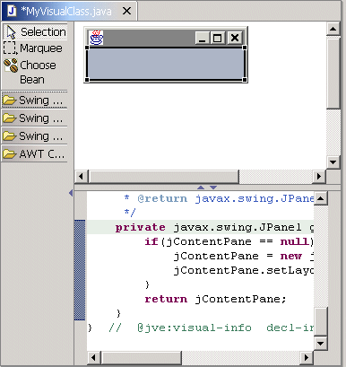
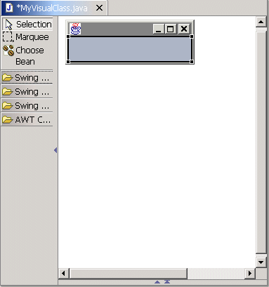

By default, the Visual Editor for Java shows the design and source views on a split pane, and the bean palettes are included in the Design view. If you prefer to have more space to work in, you can choose to stack the design and source views, rather than tiling them. You can also choose to show or hide the bean palettes in the Visual Editor by using the small arrows next to the palettes.
If you choose to stack the Design and Source views, you can switch between them by clicking the Design and Source tabs that now appear in the editor area. (By default these tabs are at the bottom of the editor area, but you can change this default in workbench preferences.) For ways to work without bean palettes, refer to the topic on adding visual beans.
The Visual Editor is made up of three areas, the palette of Java beans, the Design view showing the graphical representation of any visual beans, and the Source view showing the Java source. These are divided by separators that can be selected and moved to make best use of the available area. Each separator has buttons in the center that can be used to maximize an area.

If the down arrow is pressed in the center right of the separator between the Design view and the Source view, then the Design view is maximized to allow you to work with a large area for the Java beans. The arrow button on the separator to the right of the palette can also be pressed to hide the palette.

When the separator between the Design view and the Source view is maximized the single arrow button restores the separator to its previous position, while the button with the line moves it all the way to the opposite edge.
Related concepts
Visual Editor for Java
Related tasks
Adding a visual bean